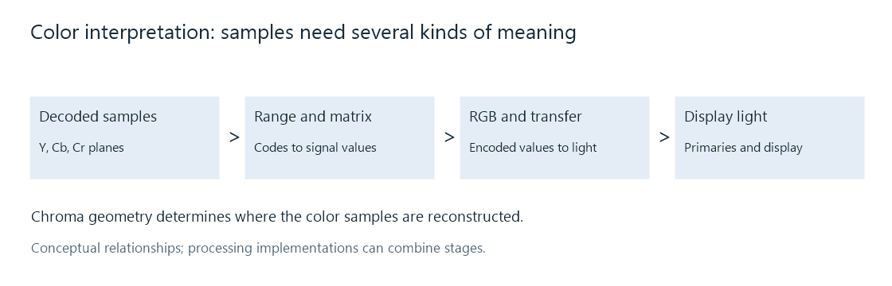

How Video Color Is Represented
Video color is represented by component samples together with information that gives those samples their spatial and colorimetric meaning.
A decoder can recover every sample in a video frame correctly and still produce the wrong colors if the next stage gives those numbers the wrong meaning. A sample value is a coordinate in a representation. The playback path needs to know what that coordinate describes before it can turn it into display light.
Consider three values at one picture position: 102, 93, 186. As an 8-bit RGB triplet, they describe one mixture of red, green, and blue. As limited-range BT.709 YCbCr, they describe a luma value and two color differences, which reconstruct approximately to encoded RGB (0.80, 0.30, 0.10). The bytes alone do not choose between these interpretations.

These are relationships that a renderer must account for. A hardware or software implementation can combine several operations into one stage.
The description that travels with a picture
Several independent properties complete the representation. Each answers a different question.
| Property | Question it answers | Example |
|---|---|---|
| Component representation | What do the numbers describe? | RGB components or YCbCr luma and color differences |
| Sampling geometry | Where are those samples in the picture? | 4:2:0 chroma, with a specified sample location |
| Precision and range | Which numbers are available, and how are they scaled? | 10-bit precision with limited-range coding |
| Color interpretation | Which primaries and light relationship are intended? | BT.709 SDR, or BT.2020 primaries with PQ |
| Storage layout | Where does a processing stage find each component? | Planar storage, NV12, or P010 |
The distinction becomes useful when two reports appear to disagree. A source can contain 10-bit 4:2:0 coded video while its decoded frame is held in P010, whose samples occupy 16-bit words. These descriptions refer to coding precision and memory storage respectively. They can both be correct.
Likewise, BT.2020 does not specify a byte layout. 4:2:0 does not specify whether the picture is HDR. A renderer combines the relevant fields rather than treating one label as a complete color description.
From a movie frame to a screen
In a common YCbCr playback path, the decoder reconstructs a full-resolution luma plane and smaller chroma planes. Color reconstruction accounts for the chroma positions and obtains the component values needed at display positions. The range interpretation removes the numerical offsets and scales; the matrix relates luma and color differences to encoded RGB.
The resulting RGB values still have a transfer-function meaning. They are not automatically proportional to emitted light. The player and display use the intended transfer relationship and primaries, and may adapt the picture to the display's color gamut or brightness capability. HDR-to-SDR tone mapping is one example where that adaptation becomes an explicit image operation.
This explains why two failures can look different. A range mismatch can raise blacks across the whole picture. A matrix mismatch can move the colors of objects while leaving neutral grays much less affected. A transfer mismatch changes the relationship between signal values and brightness. Each symptom points to a different part of the representation.
What survives a change of playback route?
When an Emby app plays the original video, its playback stack interprets the source's samples and signaling. When the server converts the video, both the processed samples and their output description must agree. A correct conversion can change precision, component representation, range, or brightness encoding; the resulting tags should describe that new picture.
The useful comparison is therefore a pair of complete descriptions: source and delivered output. Color signaling identifies the fields to examine, while ffprobe inspection shows where they appear in a report. Reading those fields together makes a green cast, washed-out black, or unexpected HDR result a question about specific interpretation steps.
See Also
- RGB Video
- YCbCr Video
- Chroma Subsampling
- Video Color Tags and Signaling
- Color Gamut
- Electro-Optical Transfer Function (EOTF)